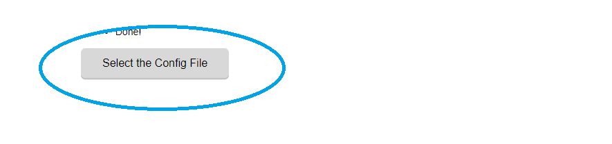
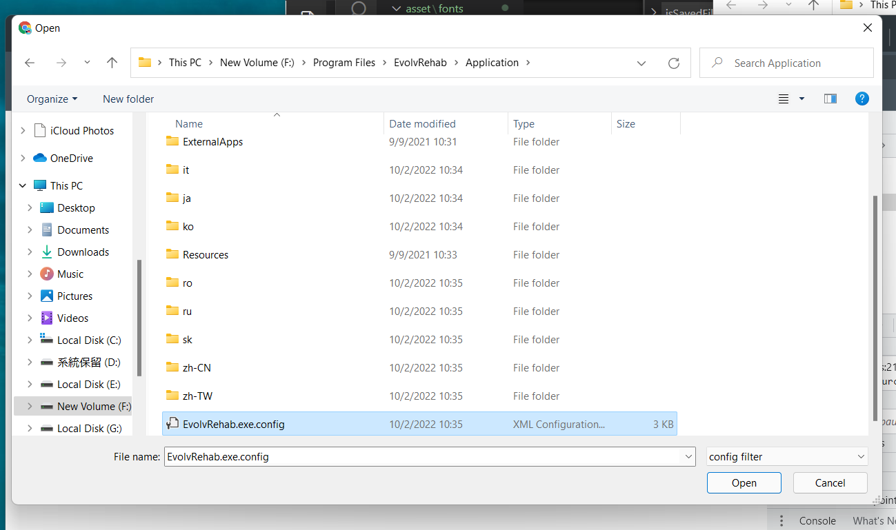
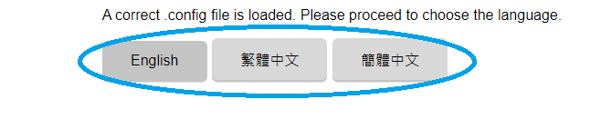
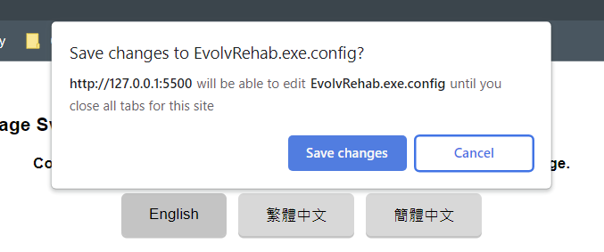

Evolv Language Switcher
EvolvRehab Language Switcher
Congrats! Langauge is switched.
How to use:
- Step 1: Open the .config file at the directory of the Evolv application. (File name: EvolvRehab.exe.config)


- Step 2: When the .config file is loaded, buttons for available languages will appear. Choose the Language you want.

- Allow this application to save changes on the .config file.

- Done!